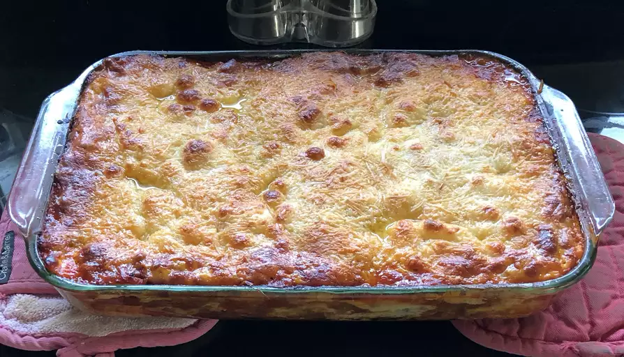

Lasagna Recipe

Description
Making lasagna can be time-consuming, but the results are well worth the
wait. You'll find a detailed ingredient list and step-by-step instructions
in the recipe below.
Ingredients list
- Besciamella
- 1l Tomato Sauce
- 500g Beef's Minced Meat
- 1 onion
- 1 garlic clove
- 500g of fresh lasagna noodles
- oregano
- salt
- black pepper
- peperoncino
- extra-virgin olive oil
Steps
- Slice the onion and the garlic clove
-
Add what sliced to a pan with 3 tablespoons of olive oil and let all
fry till an almost brown color
-
Add the minced meat and some water and cook for 1-2
minutes till the meat is not red anymore
- Add the Tomato Sauce
-
Add some oregano, 1 tablespoon of salt, some pepper and peperoncino
-
Let the ragù cook for about 1 hour at
low to half flame, add water if needed
- After the ragù is ready, let it cool for 30 min
-
Take a baking tray and cover the base with lasagna
noodles
- Put the ragù over the lasagna noodles
- Put the Besciamella over the ragù
-
Add 3 more layers by following the 3 previous steps
- Bake it in the oven at 180°C for 45 minutes
-
Optional: bake it a second time for 20-30 minutes the
day after if you wat it more crispy